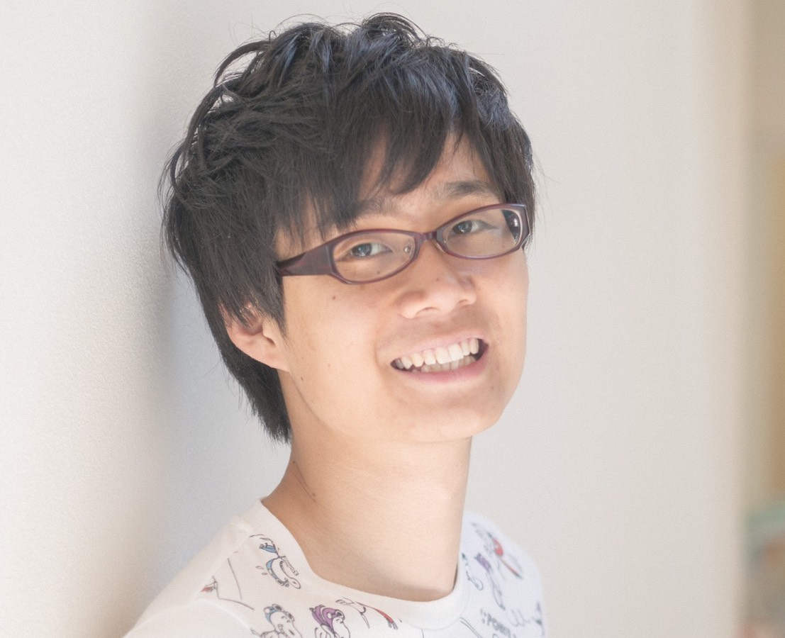

Research Area
健康・スポーツ科学 / 運動生理生化学 / 認知神経科学
Interest
- 認知機能・快気分を高める最適運動とその脳内機構：モノアミン神経系の関与に着目して
- 体力（特に握力）と認知機能（ヒト進化からの考察に興味有り、石器作りや二足歩行など）
- みんなから嫌われなず利便性の高い20mシャトルランテストの開発（10ｍシャトルラン、ハイテンポ音楽つきシャトルランなど）
Education
私立市川高校卒 (2011-2014)
横浜市立大学 国際総合科学部 人間科学コース卒 (2014-2018)
筑波大学大学院 人間総合科学研究科 体育学専攻 博士前期課程 (2018-)
Published Papers
Conference Activities & Talks
- Kuwamizu R, Suwabe K, Fukuie T, Ochi G, Soya H. (2019) The effects of daily physical activity and acute moderate exercise on human dopaminergic system: A preliminary study with spontaneous eye blink rate. The 1st International Sport Neuroscience Conference (IBRO 2019 Satellite Forum), Japan (Travel Award)
- 桑水隆多、諏訪部和也、越智元太、福家健宗、ビョンギョンホ、征矢英昭. (2019) 中強度運動はドーパミン作動性神経系を活性化させるか？：瞬きの頻度を指標にした予備検討. 第74回日本体力医学会．茨城
- 桑水隆多、村松茂、諏訪部和也、征矢英昭. (2018) 実行機能は握力とも関係するか？第73回日本体力医学会．福井
- 桑水隆多、諏訪部和也、村松茂、征矢英昭. (2018) 実行機能は持久力だけでなく握力とも関係するか？第２回スポーツニューロサイエンス研究会．福井
- Kuwamizu R, Muramatsu S, Suwabe K, Soya H. (2018) Does grip strength associate with executive function?, 第2回NIPS-ARIHHP共同ワークショップ. 愛知
- 桑水隆多. (2017) 卓球療法と実行機能. 第1回日本卓球療法学会. 石川 他 単独1件、共同1件
Graduation Thesis
Kuwamizu R. (2018) The effect of moderate-intensity handgrip exercise on executive function. (中強度ハンドグリップ運動は実行機能を向上させるか？) 平成29年度横浜市立大学卒業論文．
Awards
Travel Award for Poster Presentation, The 1st International Sport Neuroscience Conference (IBRO 2019 Satellite Forum)
Association Memberships
日本体力医学会、日本卓球療法協会
Sports experiences
2014～2018年 関東学生卓球リーグ（4、5部）通算71勝、特別賞など
2013年 卓球競技インターハイ シングルス出場
2012年 全日本卓球選手権（ジュニアの部）出場
2010年 全国中学校卓球大会（団体）優秀13校
2009年 JOCジュニアオリンピックカップ（シングルス・ダブルス）出場
Contact
ryuta.kuwamizu@gmail.com